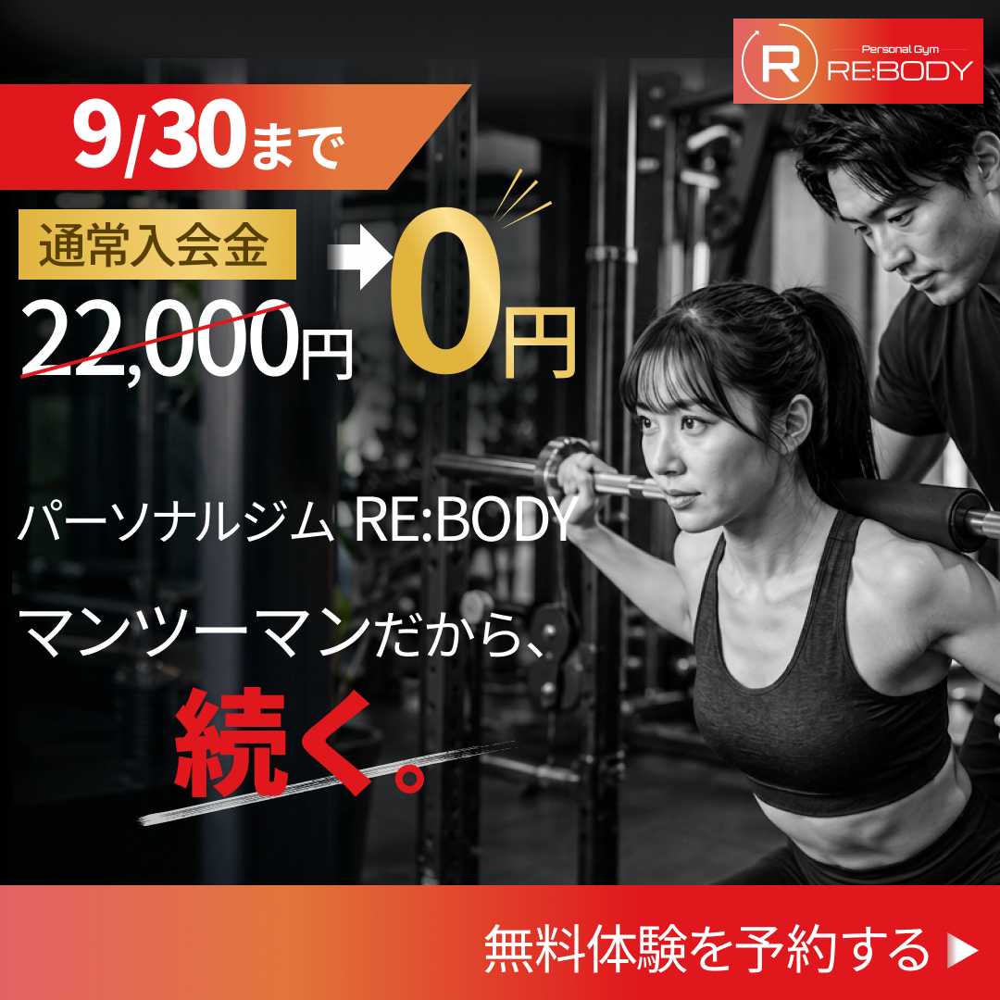
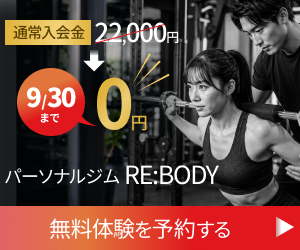
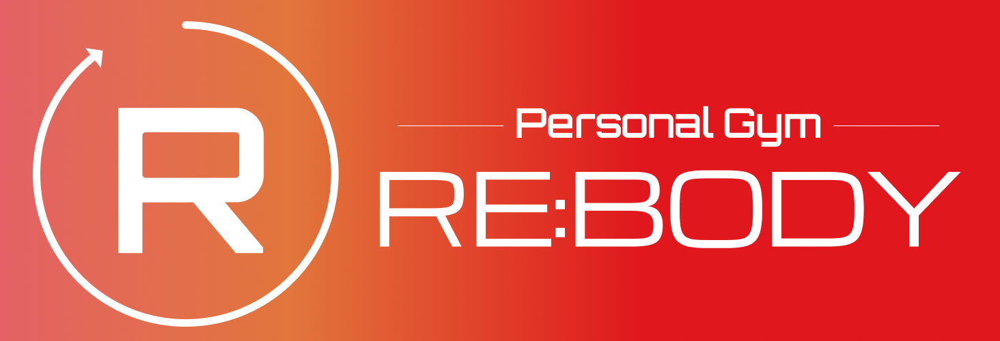
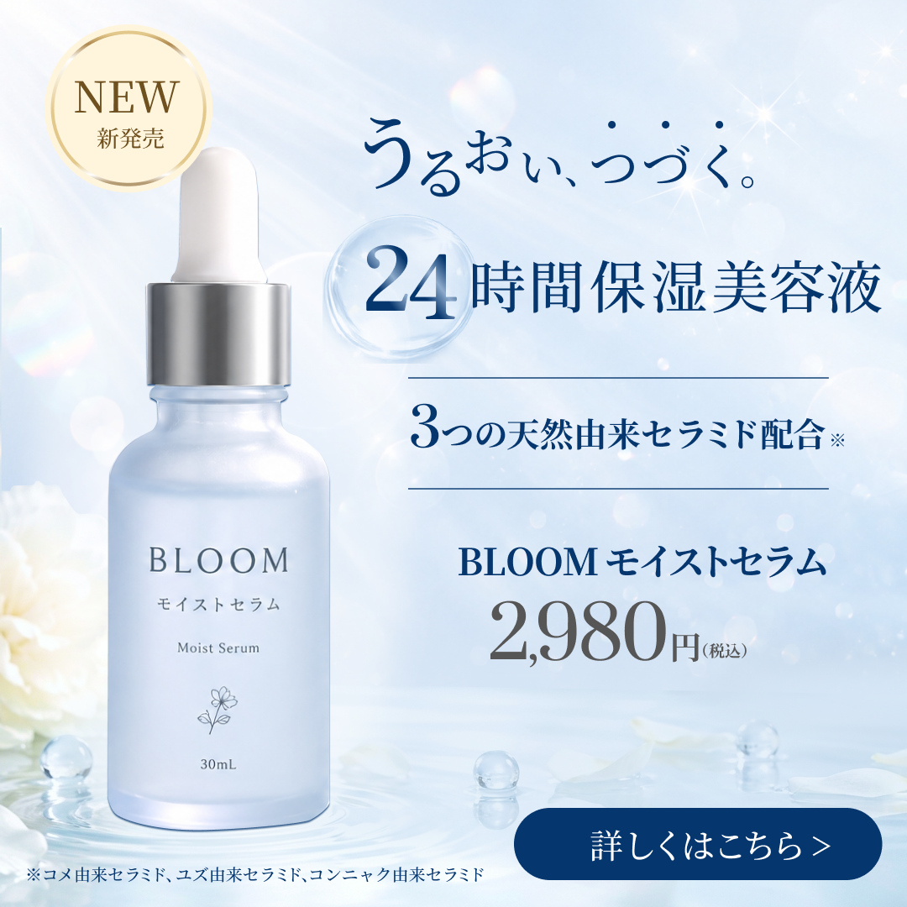
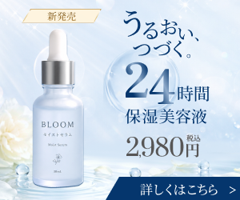
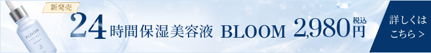
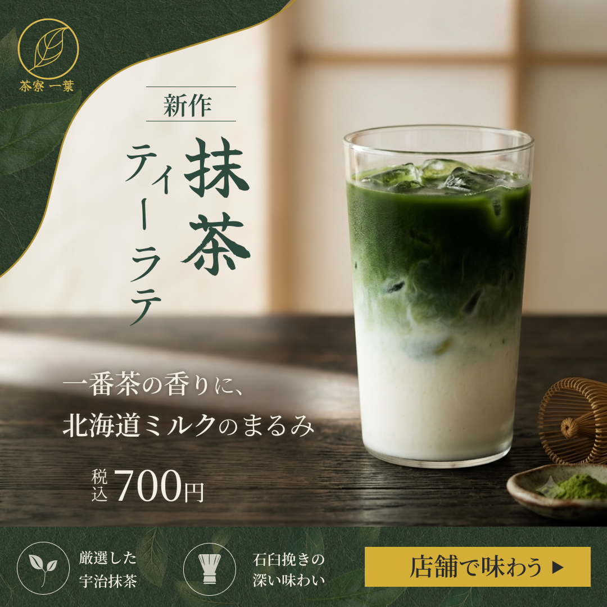
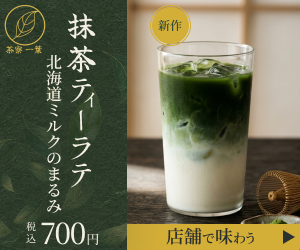
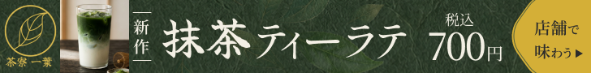
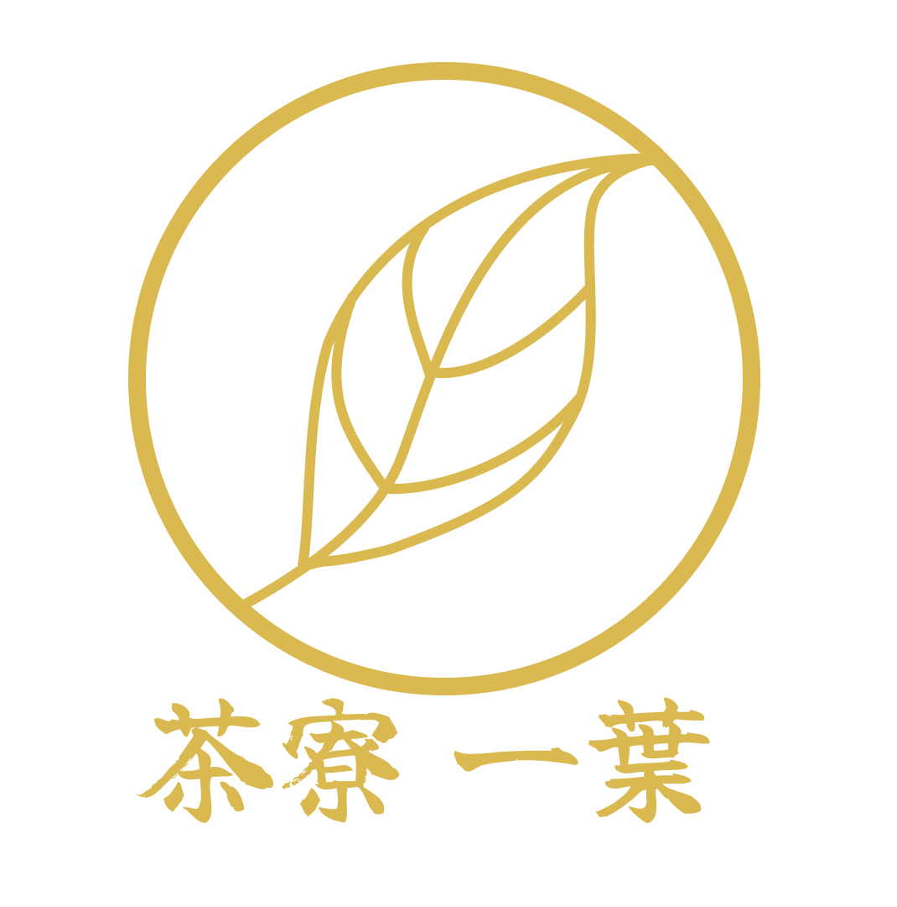

BANNER
架空の商品バナー（ジム/美容液/抹茶ティーラテ）3サイズ（300×250/728×90/1080×1080）計9枚制作しました。
figmaデータはこちら
制作期間:3週間
使用ツール
Figma / Photshop / ChatGPT（商品写真生成）
01パーソナルジムRE:BODY

1080×1080

300×250
728×90

ロゴ
ターゲットと目的
ボディメイクやパーソナルジムに興味のある
20～30代。Webサイトへ遷移して無料体験予約をしてもらう事が目的。
デザインの意図
人物写真を白黒にすることで、文字が目立つようにしました。カラーは「頑張って体作りをしたい」という人の情熱や燃焼などイメージでオレンジと赤のグラデーションにしました。
「通常入会金が０円」という訴求ポイントを引き立たせるためにゴールドのグラデーションをかけました。
工夫した点
リサイズの際に、ただ要素を小さくするのではなく、サイズに合わせて文字組を変えたり工夫しました。
サイズが小さくになるにつれ、入れられる要素が減るため、728×90では伝えたい訴求内容を厳選し、写真や文言を削りました。
02保湿美容液 BLOOM

1080×1080

300×250

728×90
ターゲットと目的
美容に関心のある20代～40代の女性。
Webサイトに飛び、商品購入してもらう事が目的
デザインの意図
金額よりも24時間保湿できるという訴求を目立たせた買ったので、金額はあえてグレーにしました。
「新発売」の金色も派手な色ではなく、控えめにし、明朝体を使用することで上品さが出るようにしました。
工夫した点
24の数字を少しずらして目が行くようにしました。
背景に、淡いキラキラの素材や水滴を配置することでうるおい感や輝くイメージをひ表現しました。
03茶寮一葉 抹茶ティーラテ

1080×1080

300×250

728×90

ロゴ
ターゲットと目的
本格的な抹茶を楽しみたい20代～40代。
Webサイトへ飛んでもらい店舗を確認し、来店してもらう事が目的
デザインの意図
重厚感のある緑の和紙を敷き、葉の画像を不当明度30％で上にのせることで本格的な抹茶のイメージを作成しました。
CTAボタンの横に訴求要素をさ並べ、クリック率が上がるようにしました。
工夫した点
「一番茶の香りに、北海道ミルクのまるみ」という訴求文は、背景の影響で視認性が低かったので淡く黒いもやを後ろにかけ、視認性を上げました。
また、文字組では漢字よりひらがなのサイズを少し小さくして全体で見たときのバランスを整えました。